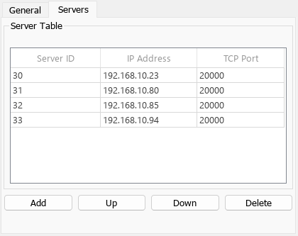

DNP3 - Client Setup — Configures the DNP3 client software stack
The Setup block configures the DNP3 client protocol stack, opens connections to DNP3 servers and enables the Class and Command blocks to exchange data on the network.
A vector of data type UINT8 which indicates the connection status for each client-server communication relation. The order of elements reflects the order of servers in the Server Table.
The output is 1 if both the TCP connection status and DNP3 link layer status are okay
Otherwise the output is 0
Data Type: uint8
This block does not have any output ports.
This is the DNP3 address of the client. DNP3 addresses must be unique in a network and range between 0 to 65519.
Enter the IP address of the DNP3 client. This step does not assign the IP address to an Ethernet interface. Instead, it binds the Setup block to an IP address which was previously configured in the Ethernet Configuration Tool. Refer to the DNP3 usage notes for further information.
There is no need to specify a TCP port as TCP ports are automatically assigned to clients.
You can define multiple clients acting on the same IP address but different TCP ports. Insert the number of required Setup blocks in the model and apply the same IP address. Unique TCP ports are then automatically assigned. Specify a unique Client ID for each Setup block.
Furthermore, you can assign additional IP addresses to the same Ethernet interface by using IP aliasing. Those addresses must be in the same subnet. Refer to the DNP3 usage notes for further information.
The client periodically sends keep-alive messages (status link messages) to the servers on the DNP3 link layer. This parameter specifies the send rate and also acts as the timeout. If the timeout is reached, the client indicates connection lost.
The units are in milliseconds.
The time the client waits for the response to a sent request before indicating an error.
The units are in milliseconds.
Defines the base sample time at which this driver block gets its sample hit. This parameter can also be set to -1 for inherited sample time. The units are in seconds.
As the DNP3 stack is performed in several background threads, the Sample Time defines the update rate of the Setup block's outputs only.
This table defines the remote DNP3 servers to which the client should connect. Use the buttons to add, move or delete stations. The number of servers is limited to 255.

Server ID: The DNP3 address of the server. DNP3 addresses must be unique in the network and range between 0 to 65519
Server Address: The IP address of the server in the DNP3 network
TCP Port: The TCP port on which the server is listening for incoming connect requests from the client. The default port for DNP3 communication is 20000